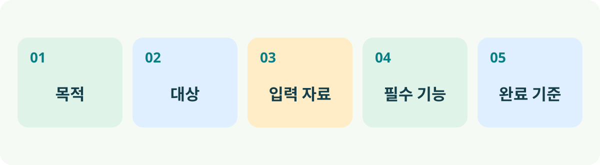
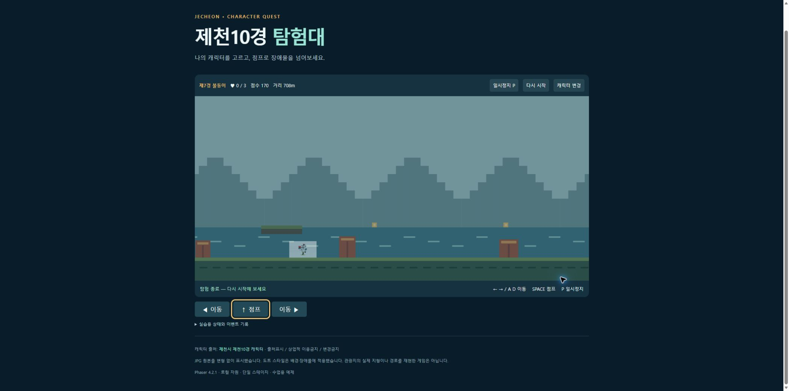
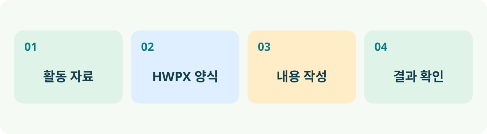
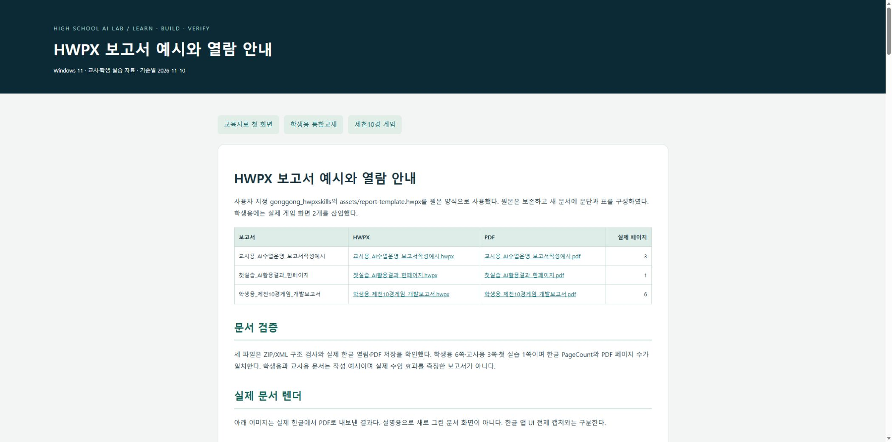
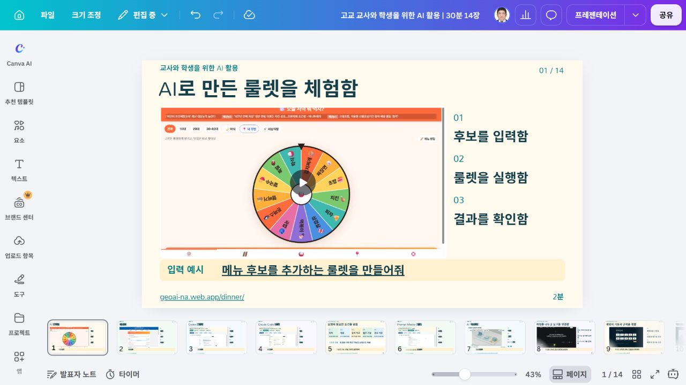

체험하고 요청한 뒤 결과를 확인함앱 체험 → 도구 이해 → 프롬프트 작성 → 확장 기능 이해 → 게임 시연 → 보고서 작성으로 연결함. 영상과 짧은 참여를 포함한 30분 과정임. 설치와 전체 개발 과정은 후속 실습으로 제공함.
01 / 14 00~02분 체험
AI로 만든 룰렛을 체험함
실제 프로그램 화면 또는 실제 실행 기록을 조회한 기존 영상임. 원본을 보존함.메뉴 후보를 직접 한 가지 제안하게 한 뒤 룰렛을 실행함. AI가 만든 앱도 실제 입력과 결과를 확인해야 함을 소개함.
프롬프트 입력 예시
학교 행사 뒤풀이 메뉴를 고르는 룰렛을 만들어줘. 메뉴 추가와 삭제, 무작위 선택, 결과 표시와 다시 실행 기능을 넣어줘. 모바일에서도 사용할 수 있게 해줘.
실제 웹 경로: https://geoai-na.web.app/dinner/
02 / 14 02~04분 체험
셔틀버스 노선도를 살펴봄
실제 프로그램 화면 또는 실제 실행 기록을 조회한 기존 영상임. 원본을 보존함.지도 앱은 제공 자료의 정확성이 중요함. 실제 운영 정보와 AI가 만든 표시 기능을 구분함.
프롬프트 입력 예시
학교 셔틀버스 정류장과 노선을 지도에 표시하는 웹앱을 설계해줘. 제공한 실제 노선 자료만 사용하고 정류장 선택과 노선별 표시 기능을 넣어줘. 운행 시간은 자료에 없으면 만들지 마.
실제 웹 경로: https://smuds-m.github.io/semyung-shuttle/
03 / 14 04~06분 도구
Codex로 첫 작업을 시작함
- 공식 설치를 확인함
- 작업 폴더를 선택함
- 생성 파일을 확인함
실제 프로그램 화면 또는 실제 실행 기록을 조회한 기존 영상임. 원본을 보존함.Windows 공식 안내와 설치된 도구의 기본 사용 흐름을 소개함. 영상의 기록 조회 화면은 직접 터미널 녹화와 구분함. 로그인과 이용 권한은 학교 환경에 맞춰 확인함.
프롬프트 입력 예시
이 폴더에 학교 행사 안내 웹페이지를 만들어줘. 행사명, 일시, 장소, 준비물을 제공 자료에서 읽어 표시해줘. 자료에 없는 내용은 확인 필요로 표시하고 원본은 보존해줘.
Windows 설치와 기본 사용을 이어서 실습함
공식 안내에서 현재 Windows 설치 경로를 확인함. 설치 후 로그인과 사용 권한을 확인하고 작업 폴더를 선택함. 첫 요청으로 파일을 만들거나 수정한 뒤 실제 표시와 변경 내용을 확인함.
상세 Windows 실습 교재
실제 웹 경로: https://learn.chatgpt.com/docs/quickstart
04 / 14 06~08분 도구
Claude Code로 파일을 수정함
- 프로젝트를 열음
- 수정 요청을 입력함
- 변경 결과를 비교함
실제 프로그램 화면 또는 실제 실행 기록을 조회한 기존 영상임. 원본을 보존함.Claude Code의 Windows 공식 설치 안내로 연결함. 프로젝트 파일을 수정하고 변경 내용과 실제 표시를 확인하는 흐름을 설명함.
프롬프트 입력 예시
기존 안내 페이지의 제목을 크게 하고 모바일에서도 읽기 쉽게 수정해줘. 행사 일시와 장소 등 사실 정보는 바꾸지 말고 수정한 파일과 확인 방법을 알려줘.
Windows 설치와 기본 사용을 이어서 실습함
공식 안내에서 현재 Windows 설치 경로를 확인함. 설치 후 로그인과 사용 권한을 확인하고 작업 폴더를 선택함. 첫 요청으로 파일을 만들거나 수정한 뒤 실제 표시와 변경 내용을 확인함.
상세 Windows 실습 교재
실제 웹 경로: https://code.claude.com/docs/en/setup
05 / 14 08~10분 프롬프트
요청에 필요한 조건을 담음
- 목적과 대상을 정함
- 자료와 기능을 지정함
- 완료 기준을 확인함

편집 가능한 SVG 원본과 PPT 도형으로 제작한 인포그래픽임.모호한 요청인 게임 만들어줘에 목적, 자료, 기능, 완료 기준을 추가함. 참여자는 추가할 조건 하나를 말함. 문장이 길어지는 것보다 확인할 조건이 분명한지가 중요함.
프롬프트 입력 예시
고등학생을 위한 제천10경 탐험 게임을 만들어줘. 제공한 캐릭터 JPG를 사용하고 캐릭터 선택, 좌우 이동, 점프, 장애물과 다시 시작 기능을 넣어줘. 원본 이미지를 보존하고 각 기능의 확인 방법을 함께 알려줘.
실제 웹 경로: https://youngwoo-m.github.io/highschool-ai-prompt-master/30min/#s05
06 / 14 10~13분 프롬프트
Prompt Master로 요청을 다듬음
- 대상 도구를 지정함
- 공용 스킬을 요청함
- 출력 조건을 확인함
실제 프로그램 화면 또는 실제 실행 기록을 조회한 기존 영상임. 원본을 보존함.공용 .agents/skills/prompt-master 원본을 사용함. 영상에 담긴 이전 프로젝트 설치는 역사적 기록이며 현재 설치 기준은 공용 교재로 연결함. 입력 목적과 생성된 프롬프트의 조건을 비교함.
프롬프트 입력 예시
prompt-master 스킬을 사용해서 Codex에 입력할 제천10경 횡스크롤 게임 개발 프롬프트를 작성해줘. 대상은 고등학생이고 Windows에서 실습함. 제공된 JPG 10종을 선택 카드로 사용함. 캐릭터 선택, 좌우 이동, 점프, 장애물 충돌, 체력 3, 점수, 일시정지와 다시 시작을 포함해줘. 원본 JPG를 변경하지 말고 검증 기준을 넣어줘. 지금은 프롬프트만 작성해줘.
영상에는 이전 프로젝트 범위 설치 기록이 포함됨. 현재는 사용자 공용 .agents/skills/prompt-master 원본을 사용함. Codex는 직접 읽고 Claude는 junction으로 연결함.
공용 설치 명령 확인실제 웹 경로: https://github.com/nidhinjs/prompt-master
07 / 14 13~16분 확장 기능
AI 확장 기능의 관계를 이해함
- 에이전트가 작업함
- 스킬을 참고함
- MCP로 도구에 연결함
Blender 교육용 3D 모델과 Remotion 애니메이션으로 제작함. 실제 소프트웨어 내부 구조와 구분함.에이전트는 목표에 따라 도구를 사용해 작업을 수행함. 스킬은 절차와 규칙, MCP는 외부 도구 및 데이터 연결을 위한 표준 통신 규약임. 플러그인은 관련 기능을 묶는 배포 단위임. 3D 작업대는 개념을 설명하는 교육용 모델임.
프롬프트 입력 예시
이 프로젝트에서 사용할 수 있는 스킬, MCP와 플러그인을 읽기 전용으로 확인해줘. 에이전트가 수행할 작업과 연결된 도구의 역할을 구분해줘. 파일 존재, 앱 인식과 실제 실행 성공을 따로 보고해줘.
| 기능 | 역할 | 활용 예시 |
|---|
| 에이전트 | 목표에 따라 도구를 사용하여 작업을 수행함 | 게임 구현과 결과 확인 |
| 스킬 | 작업 절차와 규칙을 제공함 | 양식을 유지한 HWPX 작성 |
| MCP | 외부 데이터와 도구 연결을 위한 표준 통신 규약임 | 연결된 문서와 API 조회 |
| 플러그인 | 관련 기능을 묶는 배포 단위임 | 스킬과 도구 묶음 설치 |
실제 웹 경로: https://youngwoo-m.github.io/highschool-ai-prompt-master/shared-install/
08 / 14 16~18분 확장 기능
작업을 나누고 도구를 연결함
- 보조 에이전트에 맡김
- 훅으로 검사를 실행함
- PLAYMCP를 살펴봄
실제 프로그램 화면 또는 실제 실행 기록을 조회한 기존 영상임. 원본을 보존함.서브에이전트는 한정된 보조 작업을 맡는 에이전트임. 훅은 정해진 이벤트에서 등록한 동작을 실행함. 예: 파일 수정 후 형식 검사. 모든 오류를 자동 해결한다고 설명하지 않음. PLAYMCP는 도구 탐색과 연결의 출발점임. 스킬은 단일 공용 원본, 플러그인은 양쪽 별도 등록, MCP는 공용 목록으로 관리함.
프롬프트 입력 예시
자료 조사와 코드 점검을 별도 작업으로 나눠 진행해줘. 코드 수정 뒤 형식 검사 결과를 확인하고 실패 항목을 알려줘. PLAYMCP 도구는 연결된 경우에만 사용하고 연결 여부와 실제 호출 결과를 구분해줘.
공용 설치와 후속 스킬 탐색
스킬은 사용자 .agents에 원본 하나만 둠. 플러그인은 같은 마켓플레이스를 양쪽에 각각 등록함. MCP는 공용 servers.json에 기록하고 sync_mcp.py로 미리본 뒤 적용함. 파일 존재, 앱 인식과 실제 실행 결과를 구분함.
공용 설치 상세 교재 / find-skills 실습 / 게임 개발 스킬 탐색
서브에이전트와 훅의 지원 및 설정은 호스트별로 확인함. PLAYMCP 연결도 제공 도구와 인증 상태를 별도로 확인함.
실제 웹 경로: https://playmcp.kakao.com/
09 / 14 18~20분 게임
게임의 기능과 규칙을 정함
- 캐릭터를 선택함
- 이동과 점프를 정함
- 체력과 점수를 정함
 기존 실습에서 확보한 실제 화면 캡처임.
기존 실습에서 확보한 실제 화면 캡처임.캐릭터 JPG 원본과 게임용 도트 배경을 구분함. 게임 기능 목록을 요구사항으로 정리하고 각 기능을 확인할 방법을 연결함. 공식 캐릭터의 출처와 이용 조건을 보존함.
프롬프트 입력 예시
제천10경 캐릭터 JPG 10종을 원본 그대로 선택 카드에 표시해줘. 선택한 캐릭터 ID로 플레이를 시작하고 방향키 이동, Space 점프, 장애물 충돌, 체력 3, 거리 점수, 일시정지와 다시 시작을 구현해줘.
제천10경 게임 실행
원본 JPG 10종의 선택 카드를 사용함. 공식 캐릭터를 도트 스프라이트로 변환했다고 주장하지 않음. 출처표시와 이용 조건은 기존 상세 교재를 따름.
실제 웹 경로: https://www.jecheon.go.kr/www/contents.do?key=48579
10 / 14 20~22분 게임
캐릭터를 움직이고 장애물을 넘음
- 이동 거리를 확인함
- 점프로 장애물을 넘음
- 충돌과 점수를 확인함
실제 프로그램 화면 또는 실제 실행 기록을 조회한 기존 영상임. 원본을 보존함.교육용 3D 게임 원리 영상
별도 제작한 3D 개념 모델임. 제천시 공식 캐릭터 및 실제 게임 화면과 구분함.
실제 플레이를 먼저 보여주고 교육용 3D 단면으로 이동, 점프와 충돌 조건을 설명함. 실제 게임은 원본 캐릭터 JPG를 사용하며 교육용 3D 장면은 별도의 개념 모델임.
프롬프트 입력 예시
게임을 실행해서 캐릭터 선택, 좌우 이동, 점프, 장애물 충돌, 점수와 다시 시작을 순서대로 확인해줘. 각 항목의 실제 확인 결과와 미확인 항목을 구분해줘.
실제 웹 경로: https://youngwoo-m.github.io/highschool-ai-prompt-master/05_게임실습/완성게임/index.html
11 / 14 22~24분 게임
요청을 수정하고 결과를 확인함
- 변경할 조건을 정함
- 원본을 보존함
- 실제 동작을 확인함

기존 실습에서 확보한 실제 화면 캡처임.이 장의 요청은 후속 실습 예시이며 수정 결과를 이미 검증했다고 주장하지 않음. 실제 충돌 화면과 확인 체크리스트를 사용함. 원본과 수정 결과를 비교할 기준을 설명함.
프롬프트 입력 예시
게임의 점프 높이를 현재보다 조금 높게 조정하고 장애물 간격은 유지해줘. 변경 전 파일을 보존하고 바뀐 설정을 알려줘. 이동, 충돌, 점수와 다시 시작 기능을 다시 확인해줘.
후속 수정 요청 예시임. 이 장의 점프 높이 변경을 실제 수행하고 비교 검증했다는 의미가 아님. 실제 기존 충돌 화면과 재검증할 항목을 보여줌.
실제 웹 경로: https://youngwoo-m.github.io/highschool-ai-prompt-master/05_게임실습/완성게임/index.html
12 / 14 24~26분 보고서
실습 내용을 보고서로 정리함
- 활동 자료를 모음
- 양식 항목에 맞춤
- 사실과 해석을 나눔

보고서 원본 양식과 새 결과 파일을 구분함.
기존 실습에서 확보한 실제 화면 캡처임.입력 자료, HWPX 양식, 내용 작성, 결과 확인을 연결함. 학생용 보고서와 교사용 운영 기록을 구분함. 스킬은 공용 원본에서 읽고 결과 문서는 실습 폴더에 별도로 저장함.
프롬프트 입력 예시
제공한 게임 실습 기록을 읽고 보고서에 넣을 활동, 사용 도구, 확인 결과와 개선할 점을 정리해줘. 실제로 수행하지 않은 실험과 학생의 학습 효과는 만들지 마.
원본 HWPX 양식 / 학생용 보고서 / 교사용 보고서
이전 실습에서 생성하고 확인한 실제 예시를 재사용함. 신규 학생 실험이나 학습 효과 자료를 추가한 것이 아님.
실제 웹 경로: https://github.com/Canine89/gonggong_hwpxskills
13 / 14 26~28분 보고서
HWPX 양식으로 보고서를 작성함
- 양식의 구조를 유지함
- 새 보고서를 저장함
- 한글 화면을 확인함
실제 프로그램 화면 또는 실제 실행 기록을 조회한 기존 영상임. 원본을 보존함.기존 실제 생성 보고서와 한글 열기 기록을 보여줌. 구조 검사가 실제 서식 검수를 대신하지 않음을 설명함. 영상의 설치 기록은 이전 프로젝트 범위이며 현재 공용 설치 기준은 웹 교재로 연결함.
프롬프트 입력 예시
공용 .agents/skills/hwpx의 SKILL.md와 출처를 확인하고 해당 스킬을 사용해줘. 제공한 report-template.hwpx의 표, 제목, 항목과 서식을 유지하여 AI 활용 실습 보고서를 새 파일로 작성해줘. 제공 자료의 활동과 결과만 사용하고 원본을 보존해줘. HWPX 구조 검사와 실제 한글 열기 및 화면 검수를 구분해서 보고해줘.
원본 HWPX 양식 / 학생용 보고서 / 교사용 보고서
이전 실습에서 생성하고 확인한 실제 예시를 재사용함. 신규 학생 실험이나 학습 효과 자료를 추가한 것이 아님.
실제 웹 경로: https://youngwoo-m.github.io/highschool-ai-prompt-master/06_HWPX보고서예시/보고서_안내.html
14 / 14 28~30분 적용
수업과 학습에 적용함
- 교사는 수업자료를 만듦
- 학생은 탐구를 기록함
- 결과를 직접 확인함
AI 생성 수업 활용 예시임. 실제 촬영과 실제 수업 실적이 아님. 로컬 Wan 2.2로 640×384, 24fps에서 생성하고 Remotion으로 1280×720, 30fps 편집함. 음악과 음성은 없음.앱 체험, 요청 작성, 제작과 검증, 보고서 기록을 정리함. 교사와 학생의 활용 장면은 AI 생성 예시로 표시함. 실제 수업 시행이나 학습 효과를 주장하지 않음.
프롬프트 입력 예시
오늘 배운 흐름을 바탕으로 우리 수업에 사용할 작은 AI 프로젝트를 제안해줘. 대상, 제공 자료, 필요한 기능, 결과 확인 방법을 포함하고 한 차시에 실습할 수 있는 범위로 줄여줘.
설치 후속 실습 / 게임 실행 / 보고서 상세 안내
실제 웹 경로: https://youngwoo-m.github.io/highschool-ai-prompt-master/30min/
출처와 자료의 성격을 확인함
실제 Canva 편집 화면 확인

Canva 원본은 편집 가능한 텍스트 198개와 영상 11개를 포함함. 최종 PPTX는 실제 Canva 다운로드 파일에서 한국어 글꼴, 굵기와 원고 기준 크기를 보완함.
공식 웹페이지와 저장소는 해당 기능 설명의 출처임. 실제 화면과 기존 실행 기록은 원본을 보존하여 사용함. 3D 인포그래픽은 별도 교육용 모델이며 실사형 수업 영상은 AI 생성 예시임. 제공된 양식과 보고서 예시를 재사용함.
이번 제작에서는 교육자료만 작성하고 전역 스킬 또는 MCP 설정의 --apply를 실행하지 않음. 실제 검수 결과는 별도 검증 기록에 남김. 현재 기능과 설치 조건은 공식 문서에서 다시 확인할 수 있음.
OpenAI 공식 빠른 시작 / Claude Code 공식 설치 / Prompt Master 원본 / HWPX 스킬 원본 / find-skills 원본